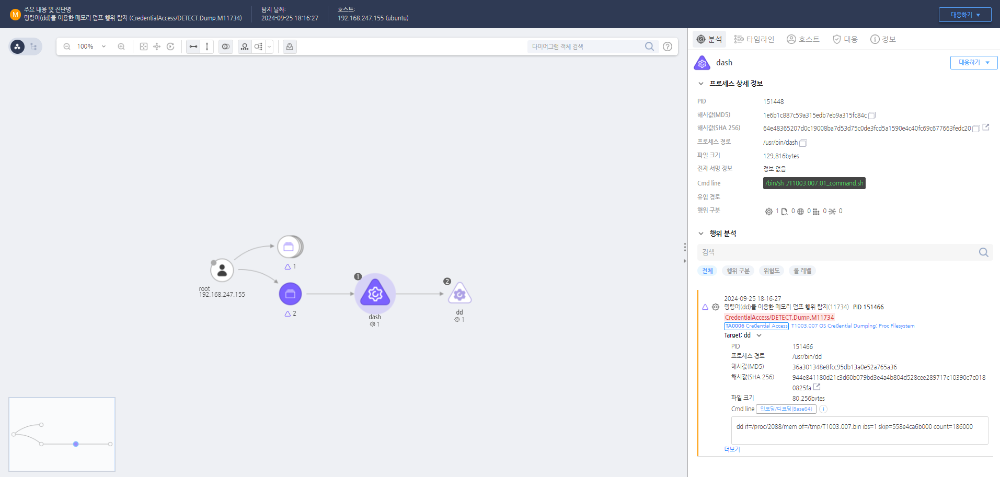

MITRE ATT&CK 액션을 기준으로 대응 방안을 작성
Action = "ProcessCreate" AND TargetProcess = "dd" AND Cmdline = "if=/proc/" AND Cmdline = "/mem" AND Cmdline = "of="
 https://172.18.10.125:8903/#/analysis/alert/66f3d66c002dc79600004d8d
의심스러운 프로세스 종료 및 분석 /proc/$pid/mem에 비정상적으로 접근하는 프로세스를 즉시 종료하여 추가 피해를 방지합니다. 종료된 프로세스의 메모리 덤프와 바이너리를 저장하고, 디지털 포렌식 도구를 사용하여 분석합니다.
침해사고 대응 팀(CIRT) 통보 침해사고 대응 팀에 알리고, 현재 시스템 상태 및 발견된 이상 행위를 보고합니다. 침해 범위를 파악하고, 추가적인 감염이 있는지 네트워크와 시스템 전반을 분석합니다.
메모리 덤프 수집 해당 프로세스와 시스템의 메모리 덤프를 수집하여 악성 코드의 활동과 유출된 데이터를 분석합니다. 비정상적으로 읽힌 메모리 덤프를 확보하여 공격자가 접근한 데이터를 파악합니다.
유출된 자격 증명 변경 유출되었을 가능성이 있는 크리덴셜을 즉시 변경하고, 관련 계정의 접근 권한을 재설정합니다. 계정 탈취를 방지하기 위해 이중 인증(MFA)을 설정하고 비밀번호를 변경합니다.
시스템 복구 및 클린업 공격자의 악성 행위로 인해 손상된 시스템을 백업에서 복구하거나, 재설치하여 클린 상태로 복구합니다. 공격자가 남긴 루트킷이나 백도어 등의 악성 파일을 삭제하고, 시스템을 초기화하여 클린 상태로 복구합니다.
자격 증명 보호
/proc/mem, /proc/<pid>/mem 접근을 제한하여 일반 사용자가 메모리 내용을 읽지 못하도록 설정합니다. procfs 마운트 옵션을 hidepid=2로 설정하여 비루트 사용자가 다른 사용자의 프로세스를 조회할 수 없도록 제한합니다. 보안 솔루션 강화
/proc 파일 접근을 제어하고, 비정상적인 접근을 탐지합니다. gcore, dd, cat /proc/*/mem 등의 크리덴셜 덤핑 관련 명령어 실행을 탐지하고 차단합니다. 이벤트 로깅 및 감사 정책 강화
/proc/mem 및 /proc/<pid>/mem 접근 시도를 로깅합니다. /etc/audit/rules.d/audit.rules 파일에 다음 규칙을 추가하여 감사 로깅을 설정합니다.sh
-w /proc/mem -p rwxa -k cred_dump
-w /proc/*/mem -p rwxa -k cred_dump
권한 제어
ptrace 기능을 제한하여 비루트 사용자가 다른 프로세스의 메모리를 읽지 못하도록 설정합니다.sh
echo 1 > /proc/sys/kernel/yama/ptrace_scope
sudo 사용자를 최소화하고, 자격 증명 덤핑과 관련된 명령어 실행을 제한하는 보안 정책을 적용합니다. 레지스트리 및 시스템 설정 보호
su 또는 sudo 실행 시 2FA를 적용하고, 크리덴셜 탈취를 어렵게 만듭니다. /etc/security/limits.conf에서 core dump를 비활성화하여 메모리 덤핑이 불가능하도록 설정합니다.sh
<ul>
<li>hard core 0
네트워크 트래픽 모니터링
/proc/mem 접근 패턴 및 비정상적인 크리덴셜 전송 시도를 감지합니다. Action 실행시 함꼐 영향을 받는 다른 Techniqes
| ATT&CK |
|---|
| T1003.007 |
| D3FEND |
|---|
| D3-FIM File Integrity Monitoring |
| D3-SCA System Call Analysis |
| D3-PM Platform Monitoring |